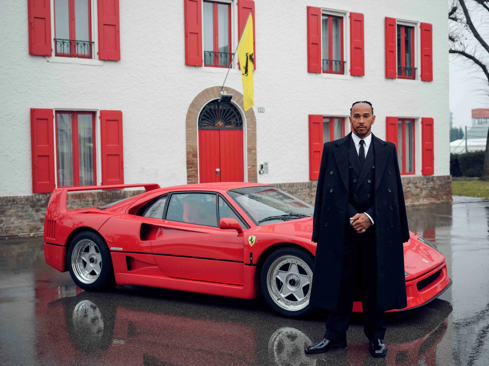
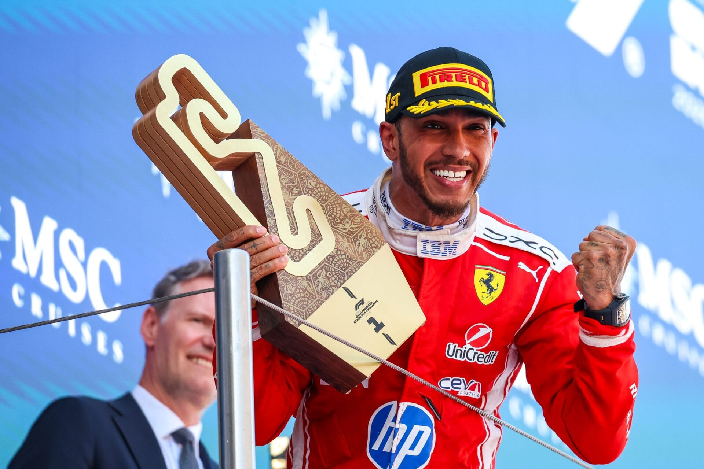

L'ère Ferrari (À partir de 2025)
C'est le transfert le plus retentissant de l'histoire moderne de la Formule 1. Annoncé pour la saison 2025, Lewis Hamilton réalise l'un de ses plus grands rêves d'enfance en s'engageant avec la mythique Scuderia Ferrari, rejoignant ainsi la célèbre usine de Maranello pour y écrire un nouveau chapitre légendaire.
L'arrivée officielle à Maranello
Dès ses premiers pas au sein de la firme italienne, immortalisés notamment devant les bâtiments historiques avec la mythique Ferrari F40, le pilote britannique embrasse l'héritage de la marque au Cavalino Rampante, marquant le début d'une union très attendue par les supporters du monde entier.

La consécration : Première victoire à Barcelone
Porté par la ferveur des Tifosi et par une alchimie immédiate avec sa nouvelle monoplace, Hamilton signe l'un des moments les plus forts de sa carrière en décrochant sa toute première victoire sous les couleurs rouges à l'occasion du Grand Prix d'Espagne, sur le circuit de Barcelone.

En route vers le huitième titre
Cette première victoire fondatrice confirme les ambitions de la Scuderia. Alliant l'expérience colossale du septuple champion du monde à la passion légendaire de l'écurie italienne, ce partenariat vise un objectif ultime : aller chercher un huitième titre mondial historique.
- 2025 : Arrivée officielle à Maranello et premiers succès majeurs.
- Ambition : Conquérir le sommet de la Formule 1 en rouge.